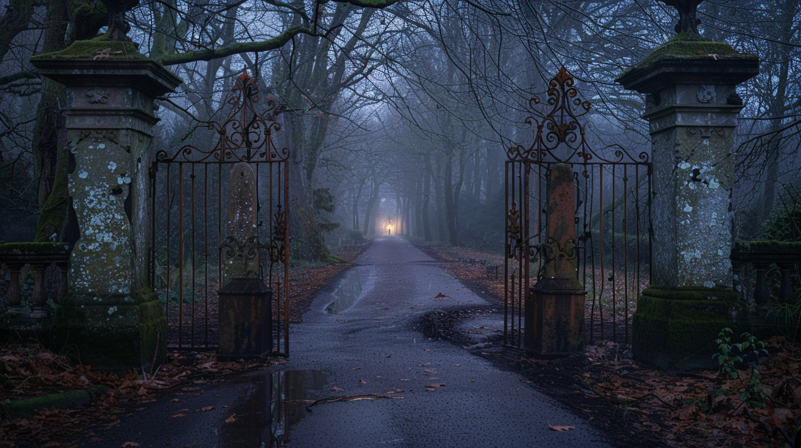

But from the end of the avenue, from the main house, a lantern approached—a lantern which alternately, from moment to moment, was crisscrossed or put out by the trunks of the trees; a paper lantern shaped like a drum and colored like the moon. A tall man carried it. I could not see his face for the light blinded me.
He opened the gate and spoke slowly in my language.
“I see that the worthy Hsi P’eng has troubled himself to see to relieving my solitude. No doubt you want to see the garden?”
Recognizing the name of one of our consuls, I replied, somewhat taken aback, “The garden?”
“The garden of forking paths.”
Something stirred in my memory and I said, with incomprehensible assurance, “The garden of my ancestor, Ts’ui Pen.”
“Your ancestor? Your illustrious ancestor? Come in.”
Recognizing the name of one of our consuls, I replied, somewhat taken aback, “The garden?”
“The garden of forking paths.”
Something stirred in my memory and I said, with incomprehensible assurance, “The garden of my ancestor, Ts’ui Pen.”
“Your ancestor? Your illustrious ancestor? Come in.”
The damp path zigzagged like those of my childhood. When we reached the house, we went into a library filled with books from both East and West. I recognized some large volumes bound in yellow silk—manuscripts of the Lost Encyclopedia edited by the Third Emperor of the Luminous Dynasty. They had never been printed. A phonograph record was spinning near a bronze phoenix. I remember also a rose-glazed jar and yet another, older by many centuries, of that blue color which our potters copied from the Persians.
The damp path zigzagged like those of my childhood. When we reached the house, we went into a library filled with books from both East and West. I recognized some large volumes bound in yellow silk—manuscripts of the Lost Encyclopedia edited by the Third Emperor of the Luminous Dynasty. They had never been printed. A phonograph record was spinning near a bronze phoenix. I remember also a rose-glazed jar and yet another, older by many centuries, of that blue color which our potters copied from the Persians.